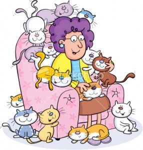

Crazy Cat Lady

Goal:
Use if and else if statements to provide different responses to a user based on how they answer the question, "How many cats do you have?".
Steps:
- Ask the user how many cats they have.
- Convert their answer into a number (int).
- If they have 3 or more cats, they might be a crazy cat lady.
- If they have less than 3 cats AND more than 0 cats, they are a cat lover.
- If they have 0 cats, maybe they have a different pet.